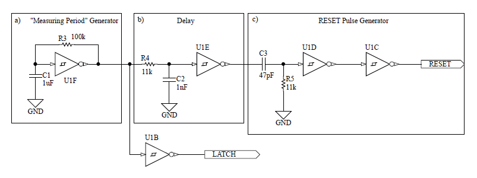
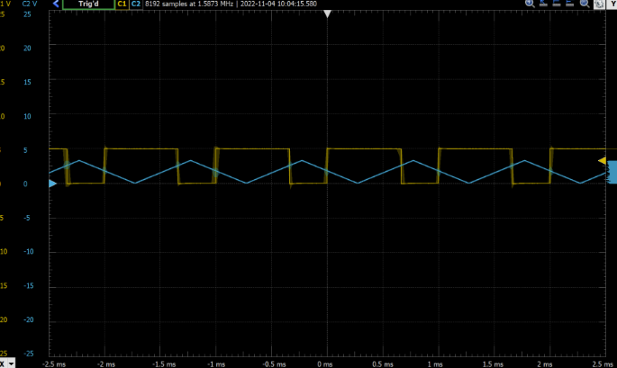

Closed-Loop Motor Speed Controller
Learning
- Electrical circuit design fundamentals, breadboard prototyping.
- Digital logic including D latches, shift registers, counters.
- Analog circuits including operational amplifiers and transistors.
- Digital-to-analog converters.
- Electrical noise filtering.
Project Overview
As the final project in ENPH 259: Experimental Techniques, students were tasked with building a circuit to control the RPM of a motor. This project was foundational to my electronics experience as it introduced me to many of the essential electrical components that are common in circuit design.
Circuit Walkthrough
The circuit can be split into five parts, starting at the motor.

The Motor

A disk with 10 equidistant slits is attached to the motor. As the disk spins, each slit lets light pass from an LED to a phototransistor, creating a clock pulse.
One full turn therefore produces 10 pulses.
A flyback diode sits in parallel with the motor to protect the circuit from voltage spikes caused by its inductive load.
D Latch and Counter

The pulses are counted by two 4-bit counters, and the counter value is stored in an 8-bit D latch. A reset pulse is sent periodically to clear the count value in the D latch, and the number of pulses recorded
between each reset is what determines the motor's RPM.
The latch output is also wired to a 7-segment display for visualization.
RESET Generator

The RESET period generator, which is responsible for creating the reset pulse sent to the D latch, is made up of 3 components: a measuring period generator, a delay circuit, and a RESET pulse generator.
The measuring period generator uses a Schmitt trigger inverter and an RC circuit.
The RC circuit feeds the inverter's input and connects back to its output through a feedback loop; its periodic charge–discharge cycle
sets the measuring period, and the inverter squares the result into a clean high or low signal.

I used a Schmitt trigger inverter for its hysteresis property: the threshold for switching low-to-high differs from the high-to-low threshold.
This matters when converting noisy analog signals, as output won't jitter between states due to noise.
The output is then fed through another inverter for noise protection before going to the clock input of the D latch.
I then fed the measuring period output into a delay circuit, which adds a short delay using an RC circuit. This signal is sent to the reset pin of the D latch.
This delay ensures the counter resets only after all values are stored in the D latch.
The delayed wave is then passed through another RC circuit and an inverter. This RC circuit uses a picofarad capacitor, ensuring a small time constant and therefore fast charge–discharge times.
When passed through an inverter, the result is an extremely thin square wave akin to a pulse. This signal serves as the reset signal to the D latch. A short pulse is needed because a long one would reset the D latch multiple times.
The signal is then passed through another inverter to restore the original polarity.
Digital-to-Analog Converter
The value stored in the D latch is converted to an analog signal to control the motor using an R-2R ladder.
The R-2R ladder is a simple DAC design that uses resistors of only two values (R and 2R) to convert a digital input to an analog voltage.
Each bit of the digital input is connected to a node in the R-2R ladder. Depending on whether the bit is high or low, the node connects to either a reference voltage or ground.
The resistors then create a voltage divider network where each bit contributes a voltage based on its significance in the binary number.
At the output, currents from each branch are summed to produce the final analog voltage, which is proportional to the digital input scaled by the reference voltage.
A buffer amplifier is used at the output of the R-2R ladder to prevent loading effects that could alter the output voltage.
This ensures that the output voltage remains stable and accurate regardless of the load connected to it.
Protections and Error Signal Amplifier

Next, the output of the DAC goes through an error signal amplifier, a protecting buffer, and finally a power transistor before being sent to the motor.
The error signal amplifier compares the output voltage of the DAC (the actual speed) with a reference voltage set by a potentiometer (the desired speed).
The difference between these two voltages is the error signal, which indicates how far off the motor speed is from the desired speed.
The measured voltage from the DAC is sent to the inverting input of an operational amplifier, while the reference voltage from the potentiometer is sent to the non-inverting input.
The operational amplifier is wired to have negative feedback. Therefore, the overall effect is that the operational amplifier will act to minimize the difference between the two inputs.
As the measured voltage from the DAC is connected to the inverting input, if the measured voltage is lower than the reference voltage, the output of the operational amplifier will increase. If the measured voltage is higher than the reference voltage, the output of the operational amplifier will decrease.
The potentiometer allows the user to set the desired speed by adjusting the reference voltage.
The amplified signal then enters a protecting buffer that uses two Zener diodes to clamp the output between 0 V and 5 V.
This is critical, as the power transistor can only handle voltages in this range.
Before reaching the power transistor, the signal passes through another buffer to isolate the rest of the circuit from the motor's load.
The BJT power transistor acts as a current amplifier, allowing a small base current to control a much larger current from the collector to the emitter. Specifically, it controls a 15 V supply current to the motor.
Results
Overall, the project was successful. The motor speed could be controlled effectively using the potentiometer, increasing or decreasing smoothly without noticeable lag. The circuit remained stable, with no oscillations or instability.
This project was a great beginner project that introduced me to fundamental concepts in electrical circuit design.